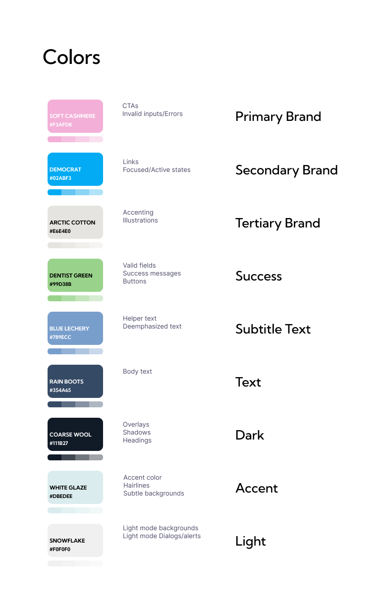
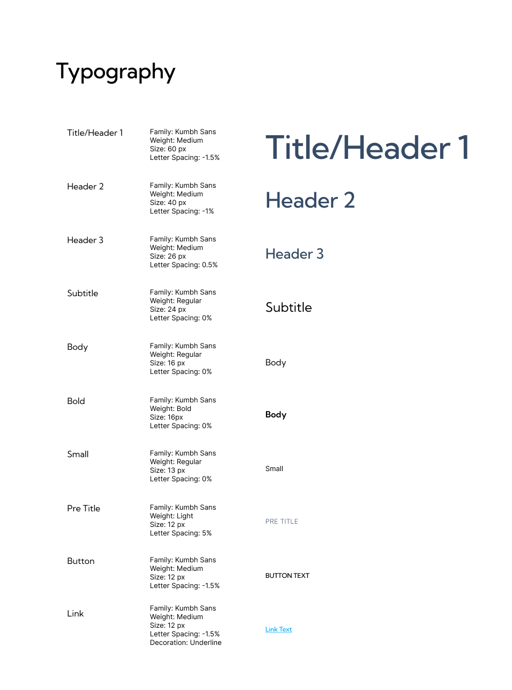
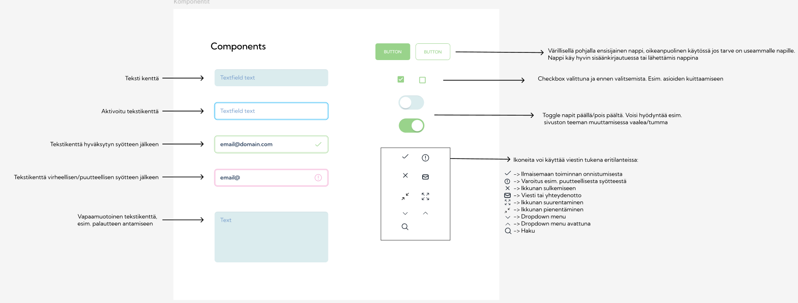
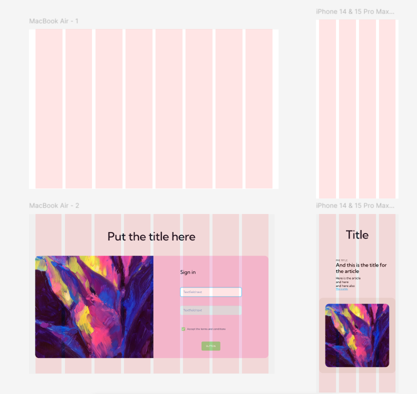

Design System

Osana digitaalisen palvelun mallinnus -kurssia toteutin itsenäisen Design System -projektin. Tämä antoi minulle mahdollisuuden syventää Figman käyttöosaamista ja kokeilla järjestelmällistä suunnittelua.
Väripaletti ja typografia
Valitsin värimaailman ja typografian niin, että ne tukivat toisiaan ja loivat yhtenäisen visuaalisen ilmeen.


Komponentit
Laadin laajan komponenttikirjaston, joka tukee suunnittelua ja mahdollistaa skaalautuvuuden.
Sijoitteluruudukko & Layout
Havainnollistin elementtien oikeanlaista asettelua verkkosivuilla.
Voit käydä kurkkaamassa Design Systeemiä!
Tasty Design System